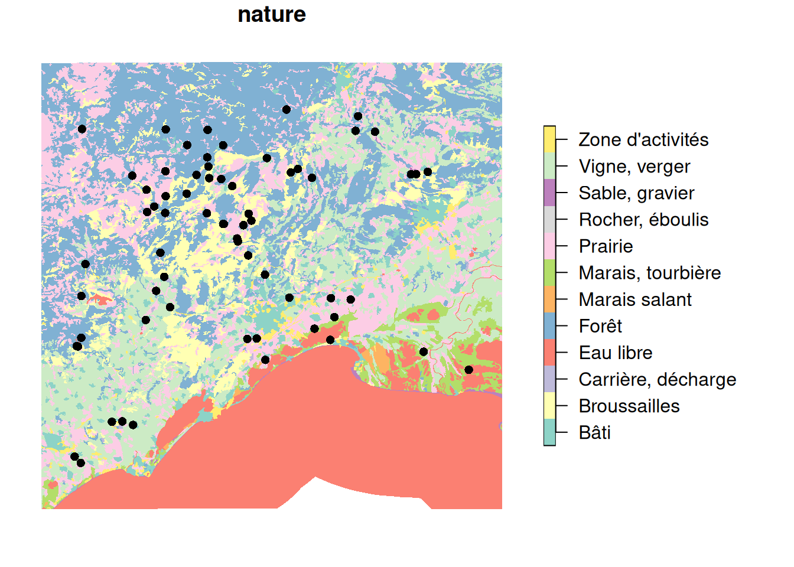

suppressPackageStartupMessages({
library(geodata)
library(happign)
library(here)
library(mapview)
library(rgbif)
library(sf)
library(terra)
})Create a toy dataset from GBIF and IGN data
This is a small practical example on how get data from GBIF and IGN based on a geographical area. For this tutorial, we will need sf, mapview, happign, geodata, terra and rgbif packages.
1. Set the spatial extent
For this example, we will focus on an area around FRB-CESAB in Montpellier. So we will need to
(1) find the coordinates of FRB-CESAB (2) create a buffer area
Get coordinates from an address
This task is called geocoding. Among other resource, we recommend the package rgeoservices (if in France, based on french IGN services) or the package tidygeocoder using Open Street Map data.
#|
cesab <- rgeoservices::gs_get_coordinates(
query = "5 rue de l’École de médecine, 34000 MONTPELLIER",
index = "address"
)#|
cesab <- tidygeocoder::geocode(
data.frame(x = "5 rue de l’École de médecine, 34000 MONTPELLIER"),
address = "x",
method = "osm"
)
# for compatibility with other solutions, rename the columns
names(cesab) <- c("x", "latitude", "longitude")# for such a simple case, it's easier to get coordinates from GoogleMap
# https://maps.app.goo.gl/woqBZSs63zSjHUsS9
cesab <- data.frame(
"latitude" = 43.61269208391402,
"longitude" = 3.8733758693843585
)Create a spatial object from coordinates
We will use the function sf::st_as_sf() with the names of the columns for the longitude (x), the latitude (y) and the Coordinate Reference System (CRS) which is EPSG:4326.
# create st_point
pt_cesab <- st_as_sf(
cesab,
coords = c("longitude", "latitude"),
crs = 4326
)Create a buffer area
We want a buffer zone of 50km around the FRB-Cesab. Because GBIF only accept rectangle buffer, we will take the square that include the circular buffer.
buffer_size <- 50000 # in m because data are in EPSG 4326
# create a round buffer zone
b_circle <- st_buffer(pt_cesab, buffer_size)
# transform to square because occ_search() needs rectangle
b_square <- st_bbox(b_circle) |> st_as_sfc()We can visualize the spatial data created with mapview:
mapview(b_square, alpha.regions = 0, lwd = 3) +
mapview(b_circle, alpha.regions = 0.1, lwd = 0) +
mapview(pt_cesab)2. Get the occurrences from GBIF
Get the number of occurrences
We will use the package rgbif(Chamberlain et al. 2025) which provides a good interface to access directly GBIF data. A good way is to start with the function rgbif::occ_count() to know how many records fits our criteria. You can add ; for multiple values and , for a range.
Let’s look at how many otter, genet and badger where seen in the period 2021-2024 around Montpellier.
occ_count(
geometry = st_as_text(b_square),
year = "2021,2024",
scientificName = "Lutra lutra (Linnaeus, 1758); Genetta genetta (Linnaeus, 1758); Meles meles (Linnaeus, 1758)"
)[1] 348Data download
If the dataset is small (<100.000 records), then we can use the function rgbif::occ_search(). Else we would need to use the function rgbif::occ_download() and register in GBIF. For the sake of downloading a small toy dataset, this is not needed.
Important
For real analysis, it is recommended to use rgbif::occ_download()(https://search.r-project.org/CRAN/refmans/rgbif/html/occ_download.html) which will provide data with a DOI that can be directly cited in future publication.
# download the data
gbif_otter <- occ_search(
geometry = st_as_text(b_square),
year = "2021",
scientificName = "Lutra lutra (Linnaeus, 1758)"
)Let’s select the most relevant columns from GBIF data for our toy data.
keep <- c(
"key",
"institutionCode",
"species",
"occurrenceStatus",
"eventDate",
"year",
"month",
"day",
"decimalLongitude",
"decimalLatitude",
"elevation",
"identificationVerificationStatus",
"identifier",
"datasetKey"
)
df1 <- gbif_otter$data[, keep]
df1$institutionCode <- ifelse(
is.na(df1$institutionCode),
"UAR PatriNat",
"iNaturalist"
)
# avoid duplicated data if same date and coordinates
col_uid <- c("eventDate", "decimalLongitude", "decimalLatitude")
# table(duplicated(df1[, col_uid]))
df1 <- df1[!duplicated(df1[, col_uid]), ]Visualization
Let’s create a spatial sf object, with coordinates
df1_sf <- st_as_sf(
df1,
coords = c("decimalLongitude", "decimalLatitude"),
crs = 4326
)mapview(df1_sf) +
mapview(b_square, alpha.regions = 0, lwd = 3)Export
We can export the dataset as csv file:
write.csv(
df1,
file = here("data", "gbif_otter_2021_mpl50km.csv"),
row.names = FALSE
)And as geopackage file:
st_write(
df1_sf,
here("data", "gbif_otter_2021_mpl50km.gpkg"),
append = FALSE
)Deleting layer `gbif_otter_2021_mpl50km' using driver `GPKG'
Writing layer `gbif_otter_2021_mpl50km' to data source
`/home/romain/GitHub/spatial-r/data/gbif_otter_2021_mpl50km.gpkg' using driver `GPKG'
Writing 83 features with 12 fields and geometry type Point.3. Get data from IGN
The package happign(Carteron 2025) provides a great interface to download French spatial data from IGN using protocols such as Web Map Service (WMS) for raster and Web Feature Service (WFS) for vectors. Read the documentation for more details.
It is recommended to extend the buffer to make sure all points, and their buffer are covered with data. We will add 0.1 degree of extra margin to the original buffer.
extra <- 0.1 #extra margin in degree
large_ext <- st_bbox(df1_sf) + extra * c(rep(-1, 2), rep(1, 2))
large_box <- large_ext |> st_bbox() |> st_as_sfc()Elevation from BD ALTI
We will use the function get_wms_raster(). For quick testing, it is recommended to use interactive = TRUE. In our case we want altimetrie data from BD ALTI at 25m resolution. In our case, we will download it with a resolution of 250m to make the file smaller and fasten computation.
#|
# To explore the options:
# get_apikeys()
# metadata_table <- get_layers_metadata("wms-r", "altimetrie") # all layers for altimetrie wms
# layer <- metadata_table[2, 1] # ELEVATION.ELEVATIONGRIDCOVERAGE
# Downloading digital elevation model values not image
mnt_2154 <- get_wms_raster(
large_box,
"ELEVATION.ELEVATIONGRIDCOVERAGE",
res = 250,
crs = 2154,
rgb = FALSE,
filename = here::here("data", "BDALTI_mpl50km.tif"),
overwrite = TRUE
)plot(mnt_2154)
vect(df1_sf) |> project(crs(mnt_2154)) |> plot(add = TRUE)
# or interactively:
# mapview(mnt_2154) +
# mapview(df1_sf)Land cover from BD CARTO
landcover <- get_wfs(large_box, "BDCARTO_V5:occupation_du_sol")
landcover <- st_crop(landcover, large_box)
# as shapefile
st_write(landcover, here::here("data", "BDCARTO-LULC_mpl50km.shp"))Reading layer `BDCARTO-LULC_mpl50km' from data source
`/home/romain/GitHub/spatial-r/data/BDCARTO-LULC_mpl50km.shp'
using driver `ESRI Shapefile'
Simple feature collection with 2910 features and 3 fields
Geometry type: MULTIPOLYGON
Dimension: XY
Bounding box: xmin: 3.18983 ymin: 43.20373 xmax: 4.56447 ymax: 44.16754
Geodetic CRS: WGS 84plot(landcover["nature"], reset = FALSE, border = FALSE)
plot(st_geometry(df1_sf), add = TRUE, pch=16)
# or interactive map:
# mapview(landcover, zcol="nature") +
# mapview(df1_sf)River from BD CARTO
For river, there are more precise information in BDTOPO (BDTOPO_V3:cours_d_eau and BDTOPO_V3:troncon_hydrographique), but for the sake of lightweight dataset we use BDCARTO.
river <- get_wfs(large_box, "BDCARTO_V5:cours_d_eau")
#"BDTOPO_V3:cours_d_eau" same but heavier
river <- st_crop(river, large_box)
# as GeoPackage
st_write(river, here::here("data", "BDCARTO-River_mpl50km.gpkg"))Reading layer `BDCARTO-River_mpl50km' from data source
`/home/romain/GitHub/spatial-r/data/BDCARTO-River_mpl50km.gpkg'
using driver `GPKG'
Simple feature collection with 2110 features and 8 fields
Geometry type: MULTILINESTRING
Dimension: XY
Bounding box: xmin: 3.18983 ymin: 43.21278 xmax: 4.56447 ymax: 44.16754
Geodetic CRS: WGS 84plot(st_geometry(river), reset = FALSE, col = "blue", axes = TRUE)
plot(st_geometry(df1_sf), add = TRUE, col = "red")
# or interactively
# mapview(river) +
# mapview(df1_sf)4. Get climate data from Chelsa
Chelsa is a good source of climate data at world scale with 1km spatial resolution. To download multiple files on a selected region, we can use the following home-made R-script:
url_monthlytas <- "https://os.unil.cloud.switch.ch/chelsa02/chelsa/global/monthly/tas/YYYY/CHELSA_tas_MM_YYYY_V.2.1.tif"
startdate <- as.Date("2015-01-01")
enddate <- as.Date("2021-12-31")
dseq <- seq.Date(startdate, enddate, by = "month")
replace_MMYYYY <- function(x, u0) {
u1 <- gsub("MM", format(x, "%m"), u0)
u2 <- gsub("YYYY", format(x, "%Y"), u1)
return(u2)
}
url_list <- sapply(dseq, replace_MMYYYY, url_monthlytas)
# add GDAL Virtual File Systems to make use of COG
full_url <- paste0("/vsicurl/", url_list)
# is much faster with 'vsicurl' (no need to download all data)
chelsa_tas <- terra::rast(full_url)
# crop to the extent of intest
crop_tas <- terra::crop(chelsa_tas, large_box)
# export
writeRaster(crop_tas, here::here("data", "CHELSA_monthly_tas_2015_2021.tif"))plot(crop_tas, y = grep("_2021_", names(crop_tas)), fun = function() {
points(vect(df1_sf), pch = 16)
})
5. Get the land border from GADM
GADM, the Database of Global Administrative Areas, is a high-resolution database of country administrative areas. It can be easily accessed through the package geodata(Hijmans 2025).
We will use the border of France as a mask, to remove the sea from the datasets.
# get the border of the country (level = 0)
france_border <- geodata::gadm("FRA", level = 0, path = here("data"))plot(france_border)
plot(b_square, add=TRUE)
plot(pt_cesab, col="red", pch=16,add=TRUE)